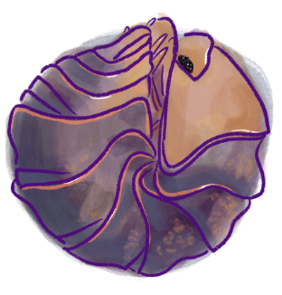

ResearchGate
Hello! I am
Kian Long
a PhD Student at
Eco-Evo-Devo Lab/Monteiro Lab
at the National University of Singapore. I'm interested in the evolution and development of respiratory structures in terrestrial isopods.